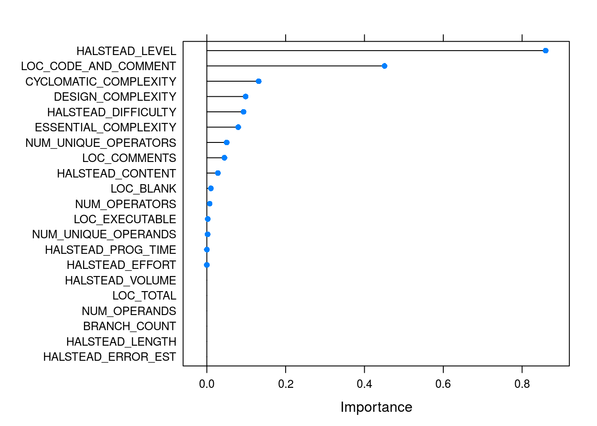

Chapter 19 Advanced Models
19.1 Genetic Programming for Symbolic Regression
This technique is inspired by Darwin’s evolution theory. + 1960s by I. Rechenberg in his work “Evolution strategies“ + 1975 Genetic Algorithms (GAs) invented by J Holland and published in his book”Adaption in Natural and Artificial Systems“ + 1992 J. Koza has used genetic algorithm to evolve programs to perform certain tasks. He called his method “genetic programming”
Other reference for GP: Langdon WB, Poli R (2001) Foundations of Genetic Programming. Springer.

- Depending on the function set used and the function to be minimised, GP can generate almost any type of curve


In R, we can use the “rgp” package
19.2 Genetic Programming Example
19.2.1 Load Data
library(foreign)
#read data
telecom1 <- read.table("./datasets/effortEstimation/Telecom1.csv", sep=",",header=TRUE, stringsAsFactors=FALSE, dec = ".")
size_telecom1 <- telecom1$size
effort_telecom1 <- telecom1$effort
chinaTrain <- read.arff("./datasets/effortEstimation/china3AttSelectedAFPTrain.arff")
china_train_size <- chinaTrain$AFP
china_train_effort <- chinaTrain$Effort
chinaTest <- read.arff("./datasets/effortEstimation/china3AttSelectedAFPTest.arff")
china_size_test <- chinaTest$AFP
actualEffort <- chinaTest$Effort19.2.2 Genetic Programming for Symbolic Regression: China dataset.
library("rgp")## *** RGP version 0.4-1 initialized successfully.
## Type 'help(package="rgp")' to bring up the RGP help pages,
## or type 'vignette("rgp_introduction")' to show RGP's package vignette.
## Type 'symbolicRegressionUi()' to bring up the symbolic regression UI if
## the optional package 'rgpui' is installed.options(digits = 5)
stepsGenerations <- 1000
initialPopulation <- 500
Steps <- c(1000)
y <- china_train_effort #
x <- china_train_size #
data2 <- data.frame(y, x) # create a data frame with effort, size
# newFuncSet <- mathFunctionSet
# alternatives to mathFunctionSet
# newFuncSet <- expLogFunctionSet # sqrt", "exp", and "ln"
# newFuncSet <- trigonometricFunctionSet
# newFuncSet <- arithmeticFunctionSet
newFuncSet <- functionSet("+","-","*", "/","sqrt", "log", "exp") # ,, )
gpresult <- symbolicRegression(y ~ x,
data=data2, functionSet=newFuncSet,
populationSize=initialPopulation,
stopCondition=makeStepsStopCondition(stepsGenerations))## STARTING genetic programming evolution run (Age/Fitness/Complexity Pareto GP search-heuristic) ...## evolution step 100, fitness evaluations: 4950, best fitness: 5615.407251, time elapsed: 3.11 seconds## evolution step 200, fitness evaluations: 9950, best fitness: 5615.407251, time elapsed: 6.06 seconds## evolution step 300, fitness evaluations: 14950, best fitness: 5615.407251, time elapsed: 8.83 seconds## evolution step 400, fitness evaluations: 19950, best fitness: 5615.407251, time elapsed: 11.43 seconds## evolution step 500, fitness evaluations: 24950, best fitness: 5615.407251, time elapsed: 14.27 seconds## evolution step 600, fitness evaluations: 29950, best fitness: 5615.407251, time elapsed: 16.93 seconds## evolution step 700, fitness evaluations: 34950, best fitness: 5615.407251, time elapsed: 19.55 seconds## evolution step 800, fitness evaluations: 39950, best fitness: 5615.407251, time elapsed: 22.79 seconds## evolution step 900, fitness evaluations: 44950, best fitness: 5615.407251, time elapsed: 25.37 seconds## evolution step 1000, fitness evaluations: 49950, best fitness: 5615.407251, time elapsed: 28.11 seconds## Genetic programming evolution run FINISHED after 1000 evolution steps, 49950 fitness evaluations and 28.11 seconds.bf <- gpresult$population[[which.min(sapply(gpresult$population, gpresult$fitnessFunction))]]
wf <- gpresult$population[[which.max(sapply(gpresult$population, gpresult$fitnessFunction))]]
bf1 <- gpresult$population[[which.min((gpresult$fitnessValues))]]
plot(x,y)
lines(x, bf(x), type = "l", col="blue", lwd=3)
lines(x,wf(x), type = "l", col="red", lwd=2)
x_test <- china_size_test
estim_by_gp <- bf(x_test)
ae_gp <- abs(actualEffort - estim_by_gp)
mean(ae_gp)## [1] 196219.2.3 Genetic Programming for Symbolic Regression. Telecom1 dataset.
- For illustration purposes only. We use all data points.
# y <- effort_telecom1 # all data points
# x <- size_telecom1 #
#
# data2 <- data.frame(y, x) # create a data frame with effort, size
# # newFuncSet <- mathFunctionSet
# # alternatives to mathFunctionSet
# newFuncSet <- expLogFunctionSet # sqrt", "exp", and "ln"
# # newFuncSet <- trigonometricFunctionSet
# # newFuncSet <- arithmeticFunctionSet
# # newFuncSet <- functionSet("+","-","*", "/","sqrt", "log", "exp") # ,, )
#
# gpresult <- symbolicRegression(y ~ x,
# data=data2, functionSet=newFuncSet,
# populationSize=initialPopulation,
# stopCondition=makeStepsStopCondition(stepsGenerations))
#
# bf <- gpresult$population[[which.min(sapply(gpresult$population, gpresult$fitnessFunction))]]
# wf <- gpresult$population[[which.max(sapply(gpresult$population, gpresult$fitnessFunction))]]
#
# bf1 <- gpresult$population[[which.min((gpresult$fitnessValues))]]
# plot(x,y)
# lines(x, bf(x), type = "l", col="blue", lwd=3)
# lines(x,wf(x), type = "l", col="red", lwd=2)19.3 Neural Networks
A neural network (NN) simulates some of the learning functions of the human brain.
It can recognize patterns and “learn” . Through the use of a trial and error method the system “learns” to become an “expert” in the field.
A NN is composed of a set of nodes (units, neurons, processing elements) + Each node has input and output + Each node performs a simple computation by its node function
Weighted connections between nodes + Connectivity gives the structure/architecture of the net + What can be computed by a NN is primarily determined by the connections and their weights


There are several packages in R to work with NNs + neuralnet + nnet + RSNNS
TO BE FIXED!!!: The following is an example with the neuralnet package (TO DO, denormalize!). Neural nets need scaling of variables to work properly.
library(foreign)
library(neuralnet)##
## Attaching package: 'neuralnet'## The following object is masked from 'package:dplyr':
##
## computechinaTrain <- read.arff("datasets/effortEstimation/china3AttSelectedAFPTrain.arff")
afpsize <- chinaTrain$AFP
effort_china <- chinaTrain$Effort
chinaTest <- read.arff("datasets/effortEstimation/china3AttSelectedAFPTest.arff")
AFPTest <- chinaTest$AFP
actualEffort <- chinaTest$Effort
trainingdata <- cbind(afpsize,effort_china)
colnames(trainingdata) <- c("Input","Output")
testingdata <- cbind(afpsize,effort_china)
colnames(trainingdata) <- c("Input","Output")
#Normalize data
norm.fun = function(x){(x - min(x))/(max(x) - min(x))}
data.norm = apply(trainingdata, 2, norm.fun)
#data.norm
testdata.norm <- apply(trainingdata, 2, norm.fun)
#testdata.norm
#Train the neural network
#Going to have 10 hidden layers
#Threshold is a numeric value specifying the threshold for the partial
#derivatives of the error function as stopping criteria.
#net_eff <- neuralnet(Output~Input,trainingdata, hidden=5, threshold=0.25)
net_eff <- neuralnet(Output~Input, data.norm, hidden=10, threshold=0.01)
# Print the network
# print(net_eff)
#Plot the neural network
plot(net_eff)
#Test the neural network on some training data
#testdata.norm<-data.frame((testdata[,1] - min(data[, 'displ']))/(max(data[, 'displ'])-min(data[, 'displ'])),(testdata[,2] - min(data[, 'year']))/(max(data[, 'year'])-min(data[, 'year'])),(testdata[,3] - min(data[, 'cyl']))/(max(data[, 'cyl'])-min(data[, 'cyl'])),(testdata[,4] - min(data[, 'hwy']))/(max(data[, 'hwy'])-min(data[, 'hwy'])))
# Run them through the neural network
# net.results <- compute(net_eff, testdata.norm[,2])
#net.results <- compute(net_eff, dataTest.norm) # With normalized data
#Lets see what properties net.sqrt has
#ls(net.results)
#Lets see the results
#print(net.results$net.result)
#Lets display a better version of the results
#cleanoutput <- cbind(testdata.norm[,2],actualEffort,
# as.data.frame(net.results$net.result))
#colnames(cleanoutput) <- c("Input","Expected Output","Neural Net Output")
#print(cleanoutput)19.4 Support Vector Machines
SVM
19.5 Ensembles
Ensembles or meta-learners combine multiple models to obtain better predictions i.e., this technique consists in combining single classifiers (sometimes are also called weak classifiers).
A problem with ensembles is that their models are difficult to interpret (they behave as blackboxes) in comparison to decision trees or rules which provide an explanation of their decision making process.
They are typically classified as Bagging, Boosting and Stacking (Stacked generalization).
19.5.1 Bagging
Bagging (also known as Bootstrap aggregating) is an ensemble technique in which a base learner is applied to multiple equal size datasets created from the original data using bootstraping. Predictions are based on voting of the individual predictions. An advantage of bagging is that it does not require any modification to the learning algorithm and takes advantage of the instability of the base classifier to create diversity among individual ensembles so that individual members of the ensemble perform well in different regions of the data. Bagging does not perform well with classifiers if their output is robust to perturbation of the data such as nearest-neighbour (NN) classifiers.
19.5.2 Boosting
Boosting techniques generate multiple models that complement each other inducing models that improve regions of the data where previous induced models preformed poorly. This is achieved by increasing the weights of instances wrongly classified, so new learners focus on those instances. Finally, classification is based on a weighted voted among all members of the ensemble.
In particular, AdaBoost.M1 [15] is a popular boosting algorithm for classification. The set of training examples is assigned an equal weight at the beginning and the weight of instances is either increased or decreased depending on whether the learner classified that instance incorrectly or not. The following iterations focus on those instances with higher weights. AdaBoost.M1 can be applied to any base learner.
19.5.3 Rotation Forests
Rotation Forests [40] combine randomly chosen subsets of attributes (random subspaces) and bagging approaches with principal components feature generation to construct an ensemble of decision trees. Principal Component Analysis is used as a feature selection technique combining subsets of attributes which are used with a bootstrapped subset of the training data by the base classifier.
19.5.4 Boosting in R
In R, there are three packages to deal with Boosting: gmb, ada and the mboost packages. An example of gbm using the caret package.
# load libraries
library(caret)
library(pROC)
#################################################
# model it
#################################################
# Get names of caret supported models (just a few - head)
head(names(getModelInfo()))## [1] "ada" "AdaBag" "AdaBoost.M1" "adaboost" "amdai"
## [6] "ANFIS"# Show model info and find out what type of model it is
getModelInfo()$gbm$tags## [1] "Tree-Based Model" "Boosting"
## [3] "Ensemble Model" "Implicit Feature Selection"
## [5] "Accepts Case Weights"getModelInfo()$gbm$type## [1] "Regression" "Classification"library(foreign)
library(caret)
library(pROC)
kc1 <- read.arff("./datasets/defectPred/D1/KC1.arff")
# Split data into training and test datasets
# TODO: Improve this with createDataParticion from Caret
set.seed(1234)
ind <- sample(2, nrow(kc1), replace = TRUE, prob = c(0.7, 0.3))
kc1.train <- kc1[ind==1, ]
kc1.test <- kc1[ind==2, ]
# create caret trainControl object to control the number of cross-validations performed
objControl <- trainControl(method='cv', number=3, returnResamp='none', summaryFunction = twoClassSummary, classProbs = TRUE)
# run model
objModel <- train(Defective ~ .,
data = kc1.train,
method = 'gbm',
trControl = objControl,
metric = "ROC" #,
#preProc = c("center", "scale")
)## Loading required package: gbm## Loading required package: splines## Loaded gbm 2.1.1## Loading required package: plyr## -------------------------------------------------------------------------## You have loaded plyr after dplyr - this is likely to cause problems.
## If you need functions from both plyr and dplyr, please load plyr first, then dplyr:
## library(plyr); library(dplyr)## -------------------------------------------------------------------------##
## Attaching package: 'plyr'## The following objects are masked from 'package:reshape':
##
## rename, round_any## The following object is masked from 'package:modeltools':
##
## empty## The following objects are masked from 'package:Hmisc':
##
## is.discrete, summarize## The following object is masked from 'package:lubridate':
##
## here## The following objects are masked from 'package:dplyr':
##
## arrange, count, desc, failwith, id, mutate, rename, summarise,
## summarize## The following object is masked from 'package:DMwR':
##
## join## Iter TrainDeviance ValidDeviance StepSize Improve
## 1 0.8352 -nan 0.1000 0.0136
## 2 0.8085 -nan 0.1000 0.0106
## 3 0.7894 -nan 0.1000 0.0084
## 4 0.7738 -nan 0.1000 0.0074
## 5 0.7556 -nan 0.1000 0.0072
## 6 0.7466 -nan 0.1000 0.0029
## 7 0.7368 -nan 0.1000 0.0052
## 8 0.7279 -nan 0.1000 0.0046
## 9 0.7174 -nan 0.1000 0.0037
## 10 0.7132 -nan 0.1000 0.0014
## 20 0.6716 -nan 0.1000 0.0000
## 40 0.6480 -nan 0.1000 -0.0004
## 60 0.6366 -nan 0.1000 -0.0001
## 80 0.6229 -nan 0.1000 -0.0003
## 100 0.6118 -nan 0.1000 -0.0003
## 120 0.6050 -nan 0.1000 -0.0005
## 140 0.5969 -nan 0.1000 -0.0003
## 150 0.5925 -nan 0.1000 -0.0004
##
## Iter TrainDeviance ValidDeviance StepSize Improve
## 1 0.8270 -nan 0.1000 0.0161
## 2 0.8060 -nan 0.1000 0.0074
## 3 0.7785 -nan 0.1000 0.0091
## 4 0.7557 -nan 0.1000 0.0085
## 5 0.7423 -nan 0.1000 0.0064
## 6 0.7331 -nan 0.1000 0.0030
## 7 0.7223 -nan 0.1000 0.0019
## 8 0.7115 -nan 0.1000 0.0031
## 9 0.7009 -nan 0.1000 0.0041
## 10 0.6909 -nan 0.1000 0.0044
## 20 0.6449 -nan 0.1000 -0.0002
## 40 0.6005 -nan 0.1000 -0.0008
## 60 0.5696 -nan 0.1000 -0.0002
## 80 0.5462 -nan 0.1000 -0.0002
## 100 0.5274 -nan 0.1000 -0.0008
## 120 0.5110 -nan 0.1000 -0.0012
## 140 0.4952 -nan 0.1000 -0.0004
## 150 0.4880 -nan 0.1000 -0.0006
##
## Iter TrainDeviance ValidDeviance StepSize Improve
## 1 0.8316 -nan 0.1000 0.0133
## 2 0.7987 -nan 0.1000 0.0126
## 3 0.7686 -nan 0.1000 0.0116
## 4 0.7471 -nan 0.1000 0.0086
## 5 0.7319 -nan 0.1000 0.0051
## 6 0.7163 -nan 0.1000 0.0049
## 7 0.7049 -nan 0.1000 0.0027
## 8 0.6934 -nan 0.1000 0.0038
## 9 0.6829 -nan 0.1000 0.0035
## 10 0.6755 -nan 0.1000 0.0027
## 20 0.6168 -nan 0.1000 -0.0007
## 40 0.5707 -nan 0.1000 -0.0018
## 60 0.5396 -nan 0.1000 -0.0012
## 80 0.5064 -nan 0.1000 -0.0011
## 100 0.4836 -nan 0.1000 -0.0009
## 120 0.4574 -nan 0.1000 -0.0003
## 140 0.4343 -nan 0.1000 -0.0011
## 150 0.4248 -nan 0.1000 -0.0004
##
## Iter TrainDeviance ValidDeviance StepSize Improve
## 1 0.8399 -nan 0.1000 0.0110
## 2 0.8180 -nan 0.1000 0.0107
## 3 0.8033 -nan 0.1000 0.0065
## 4 0.7887 -nan 0.1000 0.0073
## 5 0.7762 -nan 0.1000 0.0068
## 6 0.7630 -nan 0.1000 0.0048
## 7 0.7571 -nan 0.1000 0.0022
## 8 0.7497 -nan 0.1000 0.0026
## 9 0.7403 -nan 0.1000 0.0041
## 10 0.7344 -nan 0.1000 0.0022
## 20 0.7032 -nan 0.1000 0.0004
## 40 0.6799 -nan 0.1000 -0.0002
## 60 0.6617 -nan 0.1000 -0.0005
## 80 0.6481 -nan 0.1000 -0.0007
## 100 0.6392 -nan 0.1000 -0.0006
## 120 0.6302 -nan 0.1000 -0.0001
## 140 0.6217 -nan 0.1000 -0.0007
## 150 0.6171 -nan 0.1000 -0.0004
##
## Iter TrainDeviance ValidDeviance StepSize Improve
## 1 0.8328 -nan 0.1000 0.0172
## 2 0.8082 -nan 0.1000 0.0096
## 3 0.7898 -nan 0.1000 0.0087
## 4 0.7758 -nan 0.1000 0.0035
## 5 0.7619 -nan 0.1000 0.0041
## 6 0.7492 -nan 0.1000 0.0049
## 7 0.7379 -nan 0.1000 0.0048
## 8 0.7311 -nan 0.1000 0.0011
## 9 0.7197 -nan 0.1000 0.0035
## 10 0.7160 -nan 0.1000 0.0007
## 20 0.6746 -nan 0.1000 -0.0001
## 40 0.6312 -nan 0.1000 0.0003
## 60 0.6019 -nan 0.1000 -0.0012
## 80 0.5818 -nan 0.1000 -0.0006
## 100 0.5623 -nan 0.1000 -0.0010
## 120 0.5455 -nan 0.1000 -0.0012
## 140 0.5317 -nan 0.1000 -0.0005
## 150 0.5227 -nan 0.1000 -0.0003
##
## Iter TrainDeviance ValidDeviance StepSize Improve
## 1 0.8283 -nan 0.1000 0.0109
## 2 0.8016 -nan 0.1000 0.0122
## 3 0.7791 -nan 0.1000 0.0075
## 4 0.7607 -nan 0.1000 0.0072
## 5 0.7470 -nan 0.1000 0.0035
## 6 0.7352 -nan 0.1000 0.0054
## 7 0.7199 -nan 0.1000 0.0054
## 8 0.7111 -nan 0.1000 0.0030
## 9 0.7015 -nan 0.1000 0.0023
## 10 0.6925 -nan 0.1000 0.0016
## 20 0.6347 -nan 0.1000 0.0002
## 40 0.5882 -nan 0.1000 -0.0019
## 60 0.5546 -nan 0.1000 -0.0014
## 80 0.5269 -nan 0.1000 -0.0007
## 100 0.5025 -nan 0.1000 -0.0021
## 120 0.4782 -nan 0.1000 -0.0008
## 140 0.4555 -nan 0.1000 -0.0007
## 150 0.4442 -nan 0.1000 -0.0016
##
## Iter TrainDeviance ValidDeviance StepSize Improve
## 1 0.8443 -nan 0.1000 0.0112
## 2 0.8248 -nan 0.1000 0.0098
## 3 0.8068 -nan 0.1000 0.0075
## 4 0.7962 -nan 0.1000 0.0042
## 5 0.7816 -nan 0.1000 0.0051
## 6 0.7711 -nan 0.1000 0.0044
## 7 0.7597 -nan 0.1000 0.0024
## 8 0.7528 -nan 0.1000 0.0028
## 9 0.7464 -nan 0.1000 0.0020
## 10 0.7384 -nan 0.1000 0.0036
## 20 0.7041 -nan 0.1000 -0.0007
## 40 0.6821 -nan 0.1000 -0.0012
## 60 0.6624 -nan 0.1000 -0.0006
## 80 0.6505 -nan 0.1000 -0.0003
## 100 0.6412 -nan 0.1000 -0.0003
## 120 0.6333 -nan 0.1000 -0.0004
## 140 0.6242 -nan 0.1000 -0.0004
## 150 0.6206 -nan 0.1000 -0.0009
##
## Iter TrainDeviance ValidDeviance StepSize Improve
## 1 0.8370 -nan 0.1000 0.0144
## 2 0.8118 -nan 0.1000 0.0099
## 3 0.7922 -nan 0.1000 0.0086
## 4 0.7748 -nan 0.1000 0.0081
## 5 0.7630 -nan 0.1000 0.0044
## 6 0.7521 -nan 0.1000 0.0037
## 7 0.7405 -nan 0.1000 0.0028
## 8 0.7317 -nan 0.1000 0.0010
## 9 0.7265 -nan 0.1000 0.0009
## 10 0.7196 -nan 0.1000 0.0019
## 20 0.6801 -nan 0.1000 -0.0000
## 40 0.6347 -nan 0.1000 -0.0006
## 60 0.6025 -nan 0.1000 -0.0004
## 80 0.5789 -nan 0.1000 -0.0007
## 100 0.5579 -nan 0.1000 -0.0015
## 120 0.5428 -nan 0.1000 -0.0005
## 140 0.5289 -nan 0.1000 -0.0011
## 150 0.5200 -nan 0.1000 -0.0003
##
## Iter TrainDeviance ValidDeviance StepSize Improve
## 1 0.8322 -nan 0.1000 0.0125
## 2 0.8043 -nan 0.1000 0.0118
## 3 0.7784 -nan 0.1000 0.0087
## 4 0.7629 -nan 0.1000 0.0043
## 5 0.7465 -nan 0.1000 0.0065
## 6 0.7326 -nan 0.1000 0.0045
## 7 0.7215 -nan 0.1000 0.0017
## 8 0.7126 -nan 0.1000 0.0013
## 9 0.7047 -nan 0.1000 -0.0010
## 10 0.6936 -nan 0.1000 0.0031
## 20 0.6480 -nan 0.1000 -0.0008
## 40 0.5896 -nan 0.1000 -0.0005
## 60 0.5552 -nan 0.1000 -0.0007
## 80 0.5259 -nan 0.1000 -0.0005
## 100 0.4969 -nan 0.1000 -0.0007
## 120 0.4730 -nan 0.1000 -0.0008
## 140 0.4522 -nan 0.1000 -0.0003
## 150 0.4448 -nan 0.1000 -0.0009
##
## Iter TrainDeviance ValidDeviance StepSize Improve
## 1 0.8364 -nan 0.1000 0.0147
## 2 0.8103 -nan 0.1000 0.0136
## 3 0.7938 -nan 0.1000 0.0081
## 4 0.7757 -nan 0.1000 0.0085
## 5 0.7617 -nan 0.1000 0.0071
## 6 0.7511 -nan 0.1000 0.0046
## 7 0.7415 -nan 0.1000 0.0032
## 8 0.7295 -nan 0.1000 0.0037
## 9 0.7198 -nan 0.1000 0.0031
## 10 0.7131 -nan 0.1000 0.0028
## 20 0.6773 -nan 0.1000 -0.0009
## 40 0.6413 -nan 0.1000 -0.0006
## 60 0.6180 -nan 0.1000 -0.0007
## 80 0.6015 -nan 0.1000 -0.0008
## 100 0.5866 -nan 0.1000 -0.0002
## 120 0.5695 -nan 0.1000 -0.0011
## 140 0.5569 -nan 0.1000 -0.0005
## 150 0.5518 -nan 0.1000 -0.0006# Find out variable importance
summary(objModel)
## var rel.inf
## HALSTEAD_CONTENT HALSTEAD_CONTENT 14.6047519607
## HALSTEAD_DIFFICULTY HALSTEAD_DIFFICULTY 10.1873906874
## NUM_OPERANDS NUM_OPERANDS 8.9325104200
## NUM_OPERATORS NUM_OPERATORS 7.9127746116
## NUM_UNIQUE_OPERATORS NUM_UNIQUE_OPERATORS 6.7756582333
## LOC_TOTAL LOC_TOTAL 6.2296682519
## NUM_UNIQUE_OPERANDS NUM_UNIQUE_OPERANDS 6.1410664847
## HALSTEAD_EFFORT HALSTEAD_EFFORT 5.1853100309
## LOC_COMMENTS LOC_COMMENTS 5.1306009233
## LOC_EXECUTABLE LOC_EXECUTABLE 4.7274594398
## LOC_CODE_AND_COMMENT LOC_CODE_AND_COMMENT 3.8598106671
## HALSTEAD_LENGTH HALSTEAD_LENGTH 3.7668756935
## HALSTEAD_VOLUME HALSTEAD_VOLUME 3.4277318907
## ESSENTIAL_COMPLEXITY ESSENTIAL_COMPLEXITY 3.4005292639
## BRANCH_COUNT BRANCH_COUNT 3.2023641850
## DESIGN_COMPLEXITY DESIGN_COMPLEXITY 1.9630713543
## LOC_BLANK LOC_BLANK 1.9252046668
## HALSTEAD_LEVEL HALSTEAD_LEVEL 1.1178129374
## CYCLOMATIC_COMPLEXITY CYCLOMATIC_COMPLEXITY 1.0945057892
## HALSTEAD_ERROR_EST HALSTEAD_ERROR_EST 0.4149025082
## HALSTEAD_PROG_TIME HALSTEAD_PROG_TIME 0.0000000000# find out model details
objModel## Stochastic Gradient Boosting
##
## 1500 samples
## 21 predictors
## 2 classes: 'N', 'Y'
##
## No pre-processing
## Resampling: Cross-Validated (3 fold)
## Summary of sample sizes: 1000, 1000, 1000
## Resampling results across tuning parameters:
##
## interaction.depth n.trees ROC Sens Spec
## 1 50 0.8054441609 0.9826224329 0.1282051282
## 1 100 0.8090442338 0.9802527646 0.1581196581
## 1 150 0.8050492162 0.9755134281 0.1794871795
## 2 50 0.8068619111 0.9739336493 0.1623931624
## 2 100 0.8085834650 0.9763033175 0.2051282051
## 2 150 0.8108518654 0.9684044234 0.2307692308
## 3 50 0.8042340098 0.9691943128 0.1837606838
## 3 100 0.8054694779 0.9668246445 0.2094017094
## 3 150 0.8047859197 0.9636650869 0.2478632479
##
## Tuning parameter 'shrinkage' was held constant at a value of 0.1
##
## Tuning parameter 'n.minobsinnode' was held constant at a value of 10
## ROC was used to select the optimal model using the largest value.
## The final values used for the model were n.trees = 150,
## interaction.depth = 2, shrinkage = 0.1 and n.minobsinnode = 10.#################################################
# evalutate model
#################################################
# get predictions on your testing data
# class prediction
predictions <- predict(object=objModel, kc1.test[,-22], type='raw')
head(predictions)## [1] N N N N N N
## Levels: N YpostResample(pred=predictions, obs=as.factor(kc1.test[,22]))## Accuracy Kappa
## 0.8691275168 0.2982095951# probabilities
predictions <- predict(object=objModel, kc1.test[,-22], type='prob')
head(predictions)## N Y
## 1 0.9135315703 0.08646842967
## 2 0.9756990212 0.02430097876
## 3 0.8465454841 0.15345451590
## 4 0.8366086073 0.16339139270
## 5 0.8333283490 0.16667165098
## 6 0.9344452820 0.06555471799postResample(pred=predictions[[2]], obs=ifelse(kc1.test[,22]=='yes',1,0))## RMSE Rsquared
## 0.2143954918 NAauc <- roc(ifelse(kc1.test[,22]=="Y",1,0), predictions[[2]])
print(auc$auc)## Area under the curve: 0.8049179